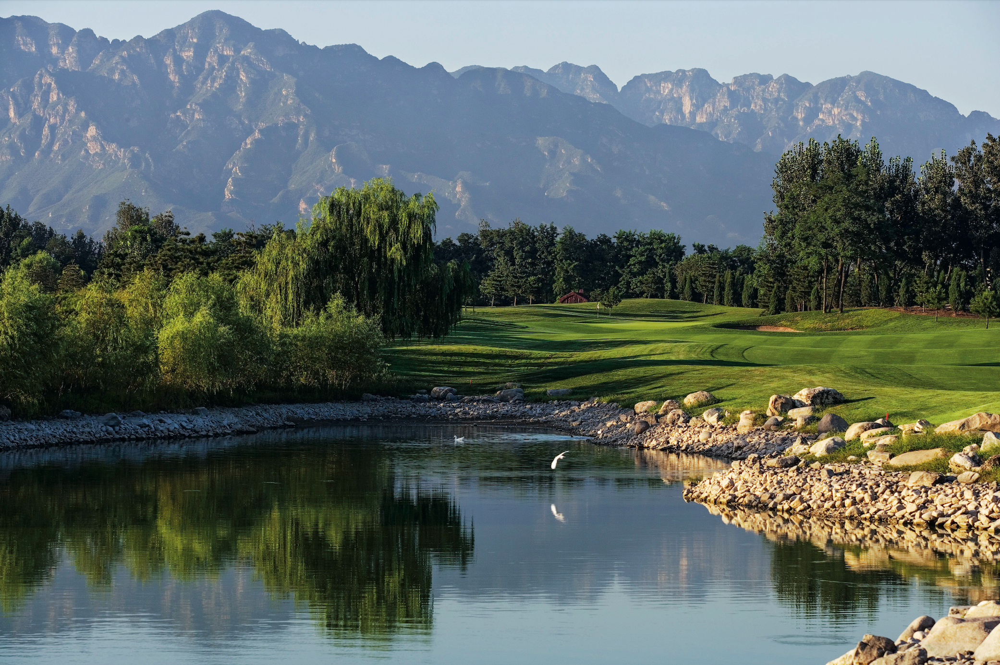

6 Days

Beijing
The Imperial North
The capital's history and grandeur, with golf in the shadow of the Great Wall.
- Day 1Arrive Beijing; settle into a courtyard-style suite. Evening: a first taste of the capital over Peking duck.
- Day 2Golf at Reignwood Pine Valley (Jack Nicklaus), set against the Jundu Mountains; afternoon, a private walk on a wild, restored stretch of the Great Wall at golden hour.
- Day 3The Forbidden City before the crowds with a historian; lunch in a hutong courtyard; afternoon at leisure or a second nine.
- Day 4A second championship round; later, a tea master and the cypress groves of the Temple of Heaven.
- Day 5Contemporary Beijing — the 798 art district and a Michelin-starred dinner.
- Day 6Private transfer for your onward flight, or connect to Jiangnan Greens.